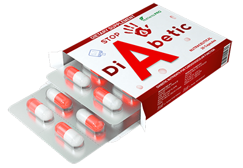

भारत में मधुमेह से कैसे छुटकारा पाया जाए, यह केवल मुझे भ्रमित कर सकता है। सिंगापुर के प्रसिद्ध एंडोक्रिनोलॉजिस्ट भारत के मीडिया आउटलेट्स के लिए स्पष्ट साक्षात्कार आयोजित करते हैं
डॉक्टर रयान टैन - सिंगापुर में प्रसिद्ध एंडोक्रिनोलॉजी के प्रमुख।
पिछले साल, रयान टैन भारत से अपने समकक्षों के अनुभव का अध्ययन करने के लिए भारत आया था। जैसा कि उन्होंने कहा, भारत में उन्होंने जो देखा उसके लिए कोई तुक या कारण नहीं था। रेयान के मुताबिक हमारे देश में डायबिटीज के मरीजों की मदद से बनाया गया बिजनेस लोगों की समस्या से निपटने में मदद करता है...
एक बार जब प्रस्तुति भारत में शानदार हो गई, तो रेयान टैन डॉक्टर भारत के मीडिया आउटलेट्स को साक्षात्कार देने के लिए सहमत हो गए। भारत में मधुमेह के इलाज के तरीके में निराशाजनक प्रसिद्ध डॉक्टर क्या था? और वह क्यों दावा करता है कि भारत में मधुमेह के बारे में "कुछ भी चिंतित नहीं है"?
सिंगापुर के पत्रकारों के साथ अपनी बातचीत देखें, आप कहते हैं कि भारत में आप जो देखते हैं वह आपको चौंका देता है। क्या आप उस पर कोई टिप्पणी कर सकते हैं?
सबसे पहले मैं यह कहना चाहता हूं कि मुझे भारत, संस्कृति और नागरिकों से प्यार है। लेकिन जिस तरह से वे मधुमेह से निपटते हैं हैरान रह गए सिंगापुर के डॉक्टर दवाएं आप बहुत अलग लक्ष्यों का पीछा कर रहे हैं। कम से कम एंडोक्रिनोलॉजी के क्षेत्र में।
भारत में मधुमेह के इलाज के लिए डॉक्टरों द्वारा क्या पेशकश की जाती है? मेटफोर्मिन, सिओफ़ोर, ग्लूकोफेज, गैल्वस और इसी तरह की अन्य दवाएं।
लेकिन कोई भी डॉक्टर आपको बताएगा कि इन दवाओं से मधुमेह को खत्म करना संभव नहीं है। वे ऐसा करने में असमर्थ थे। ये दवाएं मानसिक और शारीरिक दोनों तरह से पुरानी हैं! वे केवल रक्त में ग्लूकोज की मात्रा को अलग-अलग तरीकों से कम कर सकते हैं। वे इसे अस्थायी करते हैं। इसलिए जब दवा का प्रभाव समाप्त हो जाता है, तो ग्लूकोज का स्तर फिर से बढ़ जाता है। ऐसी दवाएं नियमित रूप से लेनी चाहिए, जो भारत में मधुमेह वाले लोगों द्वारा की जानी चाहिए।
हालाँकि, इस तरह के उपचार के दौरान होने वाले शर्करा के स्तर में वृद्धि, ग्लूकोज के स्तर में वृद्धि से कम खतरनाक नहीं है, कोई भी डॉक्टर आपको बताएगा! वे धीरे-धीरे रक्त वाहिकाओं और आंतरिक अंगों को नष्ट कर रहे हैं। इसका मतलब है कि मधुमेह के सभी परिणाम (आंखों की रोशनी, हृदय, प्रजनन प्रणाली, गुर्दे की विफलता, मधुमेह पैर, आदि) के सभी परिणाम अपने आप हो जाएंगे। शायद कुछ समय बाद।
आपको बहुत आश्चर्य होगा अगर मैं आपको बता दूं कि सिंगापुर में मधुमेह के इलाज के तरीके का इस्तेमाल नहीं किया गया है लगभग 20 वर्षों के लिए और हो सकता है कि ग्लूकोज के स्तर को कम करने के लिए सभी पंजीकृत दवाएं केवल बहुत ही दुर्लभ मामलों में उपयोग की जाती हैं - जब ग्लूकोज के स्तर को कम करना जरूरी होता है।
ऐसा अंतर क्यों है? मैं इसे केवल इस तथ्य से समझा सकता हूं कि भारतई डॉक्टरों को मधुमेह को एक ऐसी बीमारी बनाने में कोई दिलचस्पी नहीं थी जिसे समाप्त किया जा सकता है। आखिरकार, आपको यह स्वीकार करना होगा कि मधुमेह वाले लोगों में लगातार पूरक आहार बेचना और पैसा कमाना वास्तव में लोगों की मदद करने से कहीं अधिक लाभदायक है।
और भारत में, जहाँ तक मुझे पता है कि मधुमेह रोगियों के लिए एक निःशुल्क पूरक है लेकिन इसे प्राप्त करना बहुत कठिन है। क्यों? क्या भारत में पर्याप्त पूरक नहीं है?
लोग लगभग हर हफ्ते टीवी पर फार्मास्युटिकल माफिया के बारे में बात करते हैं, और किसी ने भी इसके साथ कुछ नहीं किया। क्यों? मुझे लगता है कि आप पहले से ही सब कुछ जानते हैं। भारत में मधुमेह रोगी बनना आसान नहीं है! लेकिन दवाओं के निर्माताओं के लिए, मधुमेह रोगी सोने का एक स्रोत हैं!
- और सिंगापुर में मधुमेह के उपचार के बारे में क्या?
- सिंगापुर में लगभग सभी मधुमेह रोगी स्वस्थ महसूस करते हैं, और 60% से अधिक पूर्व मधुमेह रोगी वास्तव में स्वस्थ जीवन में वापस जाते हैं। यानी उन्होंने कुल मधुमेह को मुक्त किया। उपचार के लिए पूरी तरह से अलग दृष्टिकोण के लिए सभी धन्यवाद। बेशक, हम दूसरे प्रकार के मधुमेह के बारे में बात कर रहे हैं, जिसे अधिग्रहित या उम्र से जुड़ा भी कहा जाता है (जैसा कि आमतौर पर उम्र के साथ दिखाई देता है)। यह मधुमेह इंसुलिन-स्वतंत्र के बारे में है।
इसलिए, 2000 के दशक की शुरुआत में सिंगापुर के वैज्ञानिकों ने महसूस किया कि न केवल इंसुलिन के स्तर को बढ़ाकर रक्त शर्करा के स्तर को सामान्य किया जा सकता है (यह भारत में मधुमेह के उपचार में इस्तेमाल किया जाने वाला दृष्टिकोण है, जो एक अस्थायी प्रभाव प्रदान करता है), बल्कि प्रतिक्रिया को बढ़ाकर भी अकेले ग्लूकोज का समाधान। यानी इंसुलिन प्रतिरोध को कम करके। इस दृष्टिकोण के साथ, ग्लूकोज के पूर्ण विघटन के लिए बहुत कम इंसुलिन की आवश्यकता होती है - कई मामलों में शरीर द्वारा ही उत्पादित किया जाता है।
लेकिन इस पद्धति की सबसे बड़ी बात यह है कि खपत की अवधि के दौरान, सामान्यीकृत अग्नाशयी कार्य - टाइप 2 मधुमेह पूरी तरह से गायब हो जाएगा। हां, यह प्रक्रिया तेज नहीं है, इसमें छह महीने से एक साल तक का समय लग सकता है, लेकिन वे पहले की तरह ठीक हो गए। स्वस्थ होने का क्या अर्थ है? इसका मतलब है कि एक व्यक्ति मधुमेह के सभी लक्षणों से पूरी तरह मुक्त हो सकता है, अब अपने रक्त शर्करा को नियंत्रित करने की आवश्यकता नहीं है और मधुमेह का डर उसे भीतर से नष्ट कर देगा। यह कम से कम 10-15 साल का जीवन विस्तार है!
जब मैं भारत के आँकड़ों को देखता हूँ, तो मेरा शरीर काँप जाता है। क्या आप जानते हैं कि भारत में मधुमेह मृत्यु के मामले में दूसरे स्थान पर है, हृदय रोग के बाद दूसरे स्थान पर है? और लोग कम उम्र में ही इस बीमारी से मर जाते हैं - मधुमेह वाले 90% तक लोग 60 वर्ष से अधिक नहीं जीते हैं!
- क्या यह वास्तव में भारत में कोई पूरक नहीं है जो इंसुलिन प्रतिरोध को कम कर सकता है?
- भारत में, सिंगापुर की तरह, टाइप 2 मधुमेह का कोई इलाज नहीं है। भारत में, यह है कई मधुमेह रोगी इसके लिए अपने स्वास्थ्य का श्रेय देते हैं। 2010 में भारत के वैज्ञानिकों द्वारा विकसित इस दवा का मुख्य सक्रिय घटक एंड्रोग्राफिस पैनिकुलता हर्बा का अर्क है। यह पदार्थ ग्लूकोस के घोल की प्रतिक्रिया को 7 गुना से अधिक बार मजबूत करने में सक्षम है! जिससे ब्लड शुगर लेवल सामान्य हो जाता है। इसके अलावा, जैसा कि ऊपर उल्लेख किया गया है, प्रतिरोध में कमी न केवल दवा लेने के बाद देखी जाती है, बल्कि लंबे समय तक भी देखी जाती है।

एंड्रोग्राफिस पैनिकुलता अर्क हर्बा के अलावा, में स्वेटेनिया महोगनी सीमेंट का अर्क भी होता है और ऑर्थोसिफोनिस स्टैमिनस फोलियम का अर्क मधुमेह रोगियों, सूक्ष्म और स्थूल तत्वों के स्वास्थ्य के लिए फायदेमंद होता है, जिनमें मधुमेह से क्षतिग्रस्त आंतरिक अंगों में सुधार करना भी शामिल है।
संयोजन:
|
गुरमर |
अग्न्याशय से इंसुलिन की वृद्धि। |
|
Jiaogulan |
रक्त शर्करा के स्तर को स्थिर करने में मदद करता है। |
|
ओफियोपोगोन जपोनिकस |
रक्त शर्करा के स्तर को कम करें, गुर्दे की जटिलताओं को रोकें। |
|
शिसांद्रा चिनेंसिस बेली |
शरीर की स्थिति को बनाए रखना, प्रतिरक्षा प्रणाली को मजबूत करना। |
|
इलेक्स |
गर्मी को दूर भगाएं और लीवर को डिटॉक्सीफाई करें। |
जैसा कि आप देख सकते हैं, इन दवाओं का रोग पर जटिल प्रभाव पड़ता है।
- क्या भारत के फार्मेसियों में बेचा जाता है?
- तथ्य नहीं है। एक ही समय में, बिना किसी संदेह के, एंडोक्रिनोलॉजिस्ट भारत इस प्रगतिशील पद्धति में कम से कम रुचि रखते हैं, एंड्रोग्राफिस पैनिकुलता जड़ी बूटी के अर्क की प्रभावकारिता को महसूस करते हैं जो इंसुलिन प्रतिरोध को कम कर सकते हैं।
जहां तक मुझे पता है, निर्माता फार्माकोलॉजिकल भारत बाजार में प्रवेश करना चाहता है। लेकिन उन्हें सैकड़ों बाधाओं के साथ ऐसा करने की अनुमति नहीं है। जैसा कि पहले ही कहा गया है, भारत में मधुमेह रोगियों की मदद करने से किसी को कोई फायदा नहीं होता है। हालाँकि, औषध विज्ञान आज एक व्यवसाय है! सिंगापुर में भी, लेकिन अगर सिंगापुर में एक व्यवसाय ईमानदार है (लोगों को स्वस्थ रहने के लिए), दुर्भाग्य से भारत में, नहीं!
- भारत में मधुमेह रोगियों के लिए आपकी क्या सिफारिशें हैं?
- आम लोग, विशेष रूप से 50 वर्ष से अधिक आयु के लोग, दूसरों की तुलना में अधिक पीड़ित होगा। लेकिन सौभाग्य से अब एक रास्ता निकल आया है। वर्तमान में, भारत एंडोक्रिनोलॉजी सेंटर भारत में सभी मधुमेह रोगियों को वितरित किया जाता है 50% तक की छूट क्लिक करके नाटक" नीचे। डॉक्टर वेब स्पेशल बनाते हैं, और फैक्ट्री में कई तरह की दवाओं की जरूरत होती है। इसलिए, अब भारत में सभी मधुमेह रोगी भारत में आसानी से ऑर्डर कर सकते हैं।
अब मैं आपको बताऊंगा कि रिजर्वेशन कैसे होता है।
चाल है:
- फॉर्म भरें - अपना नाम और फोन नंबर छोड़ दें।
- कुछ समय बाद, हमारे सलाहकार आपसे संपर्क करेंगे और आपके सभी सवालों के जवाब देंगे। आपको अपना शिपिंग पता बताना चाहिए।
- 5-7 दिनों के बाद, आपको बस कूरियर द्वारा ऑर्डर आने का इंतजार करना होगा।
हम पहले से ही 3 महीने के लिए वितरित करते हैं। भारत में कई हज़ारों मधुमेह रोगियों ने इस अवसर का लाभ उठाया है। प्राप्त करने वाले प्रत्येक व्यक्ति ने एक सर्वेक्षण करने के लिए कहा - दवा ने उनकी कितनी अच्छी मदद की। वर्तमान में, सर्वेक्षण में 2,000 से अधिक लोगों ने भाग लिया है।
सर्वेक्षण के परिणाम:
- रक्त शर्करा को सामान्य से कम करना - उत्तरदाताओं का 99%।
- मधुमेह के सभी लक्षणों का गायब होना: प्यास, थकान, बार-बार पेशाब आना आदि - उत्तरदाताओं का 96%।
- बेहतर दृष्टि और यौन क्रिया - उत्तरदाताओं का 92%।
- त्वचा की स्थिति में सुधार - उत्तरदाताओं का 98%।
- कोई साइड इफेक्ट और लत नहीं - उत्तरदाताओं का 100%।
- प्रमोशन कब तक चलेगा?
- जब तक आवंटित बैच पूरा नहीं हो जाता। लेकिन मैं चेतावनी देना चाहता था कि केवल कुछ ही शेष पैकेज। हाल ही में, अधिक से अधिक लोगों को आदेश दिया गया है। भारत में मधुमेह रोगी पहले से ही ग्लूकोज के स्तर को कम करने के लिए पारंपरिक गोली की तुलना में उच्च प्रभावशीलता को जानते हैं।
इस पूरक के पूरा होने तक, मेरा सुझाव है कि सभी मधुमेह रोगी साइट पर ऑर्डर के लिए अनुरोध छोड़ दें।
दवा लेने के लिए डॉक्टर का सर्टिफिकेट जरूरी नहीं!
मारिया सुकमा
धन्यवाद। यह बहुत दिलचस्प है। मैंने बुक किया था। फोन पर सलाहकारों ने कहा कि बहुत सारे पैकेज शेष हैं। तो, जो कोई भी चाहता है, जल्द ही ऑर्डर करें!
पसंद ‧ 0 ‧ जवाब
महमूद सूर्य
मैं उन लोगों में से एक था जिन्होंने इस दवा की कोशिश की है। मेरा शुगर लेवल वापस सामान्य हो गया है। मुझे निर्जलीकरण, शुष्क मुँह, बार-बार शौचालय जाने, या चक्कर आने की शिकायत नहीं है। मैं इस दवा को लेने के बाद हर दिन रक्त शर्करा के स्तर की जाँच करता हूँ और परिणाम फिर से नहीं आए। इलाज के 2 महीने बीत चुके हैं। मैं खुद को ज्यादा स्वस्थ महसूस करता हूं। मैं सभी को सलाह देता हूं।
पसंद ‧ 0 ‧ जवाब
शीला पुत्री
धन्यवाद। बहुत ही रोचक। मैंने वेबसाइट के बारे में पढ़ा है। बहुत प्रभावशाली।
पसंद ‧ 1 ‧ जवाब
क्लारा एंडिनिक
मैंने एक अनुरोध छोड़ा था। उन्होंने वादा किया कि मैं इसे 5 दिनों के भीतर कूरियर से भेजूंगा। मुझे भी यही उम्मीद है। मैं पहले से ही मधुमेह से ऊब चुका हूं। मैंने अपने बुढ़ापे में मधुमेह होने के लिए क्या किया है
पसंद ‧ 6 ‧ जवाब
आरिफ सुरतंतो
मुझे कल ही आदेश मिल चुका है। मुझे विश्वास नहीं है कि यह जल्दी आ जाएगा। मुझे लगता है कि यह एक घोटाला है। लेकिन मुझे ये दवाएं मिल रही हैं और मैंने इसे पीना शुरू कर दिया है, यह सब असली और असली सामान है।
पसंद ‧ 13 ‧ जवाब
यंती चित्र
हैलो सभी को। युनिता मेरा नाम, मेरी उम्र 59 साल, मेरा शुरुआती वजन - 124 किलो, आज शरीर का वजन - 80 किलो, ऊंचाई - 164 सेमी। ग्लूकोज के स्तर में 18 से 12 तक उतार-चढ़ाव होता है, 29 हुआ करता था। अब - 5.0। मैं 2 महीने तक का सेवन करता हूं। परिणाम प्रभावशाली था। किसी भी सप्लीमेंट ने कभी मेरी इस तरह मदद नहीं की।
पसंद ‧ 16 ‧ जवाब
यंती चित्र
यह भारतई डॉक्टरों के मुख्य उद्देश्य के बारे में सच है। उन्हें हमसे जो चाहिए वो है पैसा! वे निर्धारित नहीं करते हैं कि पूरक को रियायती मूल्य पर दिया जाना चाहिए, लेकिन फार्मेसी में बहुत सी चीजें हैं। "खरीदें और खुश रहें"। कुल अज्ञान। मुझे अपने लोगों की चिंता है, हम जानवरों की तरह व्यवहार करते हैं। मधुमेह रोगियों की किसी को परवाह नहीं है। दुख की बात है कि मैं सिंगापुर में नहीं रह सका। जानकारी साझा करने के लिए धन्यवाद।
पसंद ‧ 19 ‧ जवाब
एरिको सुबागियो
मधुमेह एक ऐसी बीमारी है जो बहुत ही खतरनाक है। मैं बिना किसी लक्षण के 4 साल से वहां हूं, केवल शुष्क मुंह। इसलिए मैं कटे हुए पैर वगैरह में विश्वास नहीं करता। लेकिन हाल ही में मैं बेहोश हो गई और मुझे अस्पताल ले जाया गया, जहां मेरा परीक्षण किया गया। यह पता चला कि सब कुछ बहुत खराब है। किडनी को कैंसर होने का खतरा, रक्तवाहिका इतनी थकी कि डॉक्टर हैरान ऐसा तब होता है जब आप बीमारी का इलाज नहीं कर रहे होते हैं। मैंने के बारे में बहुत कुछ सुना है, लेकिन पता नहीं किस क्रम में। अब मुझे पहले से ही पता है। शुक्रिया!
पसंद ‧ 26 ‧ जवाब
अमीर आंद्रे
यह वास्तव में कुछ था! मैं कई हफ्तों से पी रहा हूं। मैंने यह महसूस नहीं किया है। पहले सेवन के अगले दिन शुगर लेवल सामान्य हो जाता है।
पसंद ‧ 31 ‧ जवाब
मोहसिन इंद्रावन
मुझे थेरेपी का भी अनुभव है। मैं 4 महीने पहले ले रहा हूं (मेरी बेटी ने इसे खरीदा है)। मैं आमतौर पर मधुमेह को नजरअंदाज कर देता हूं, लेकिन बहुत खराब लीवर परीक्षण के बाद। अंत में मैंने देखभाल करना और का सेवन करना शुरू कर दिया। बहुत अच्छा काम करता है!
पसंद ‧ 37 ‧ जवाब
जैस्मीन संतिका
मैं 2 साल पहले से का उपयोग कर रही हूं। आधिकारिक साइट पर बुक किया गया। मैं पहले से ही 1.5 साल से एक स्वस्थ व्यक्ति की तरह महसूस कर रही हूं। मैं जो कुछ भी कोशिश करती हूं, (मैं एक मधुमेह बूढ़ी हूं) सबसे अच्छा पूरक है। अब और संकोच न करें! हे रोग नाशक !
पसंद ‧ 36 ‧ जवाब
वेंडी विषय
मैंने बुक किया था। मैं पामुलंग में रहता हूं और उन्होंने एक हफ्ते में भेजने का वादा किया था। मैं इंतज़ार करूंगा।
पसंद ‧ 37 ‧ जवाब
रूथ चित्र
शुक्रिया!
पसंद ‧ 43 ‧ जवाब
शानिया पूजिक
मेरे दोस्त ने मुझे इस बारे में बताया। वह वहीं रहा। वे वैसे ही थे, और शायद पूरे सिंगापुर में भी थे। निश्चित रूप से भारत का भ्रष्टाचार, वास्तव में वहां काम करने वाले पूरक कभी भी फार्मेसी अलमारियों पर नहीं होंगे ...
पसंद ‧ 42 ‧ जवाब
जिहान सिंटा |
मुझे वास्तव में पसंद है और मैं इसे एक सप्ताह से पी रहा हूं। यह उत्कृष्ट के साथ मदद करता है
पसंद ‧ 48 ‧ जवाब
जेसिका विरांति
हाँ, मैं समय पर ऑर्डर कर सकती थी। मैं खपत शुरू करूंगा। मधुमेह का इलाज नहीं किया गया तो मौत का कारण बनेगा
पसंद ‧ 48 ‧ जवाब